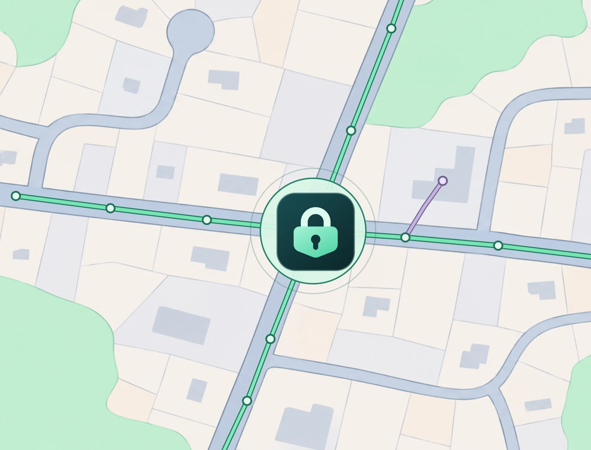

New in v0.3.5 · Movable toolbar
Position Locks for Katapult
Lock or unlock node positions directly from the Katapult Pro map.
How it worksAn independent extension for desktop Chrome.

How it works
-
Open an editable job
In desktop Chrome, open a Katapult Pro job you have permission to edit.
-
Choose which nodes to update
Click Position Locks at the bottom of the map or wherever you have placed the toolbar. Use Single Node for the node you select on the map, or All Job Nodes to update all supported nodes in the job.
-
Lock or unlock positions
Click Lock Positions or Unlock Positions and review the lock status. Select Stop to end a batch early and keep completed changes.
Supported node types Poles, references, building attachments, and break points.
Support
Get help with moving the toolbar, Node Info, interrupted edits, or a batch that stopped early.